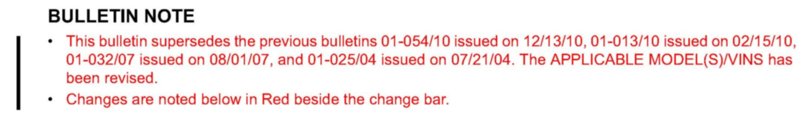
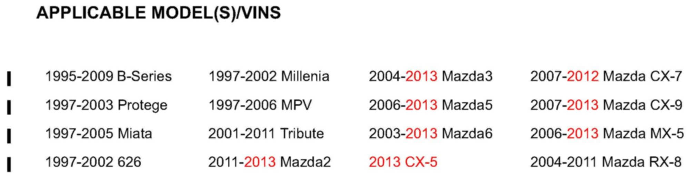
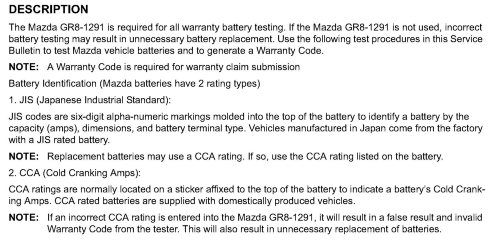
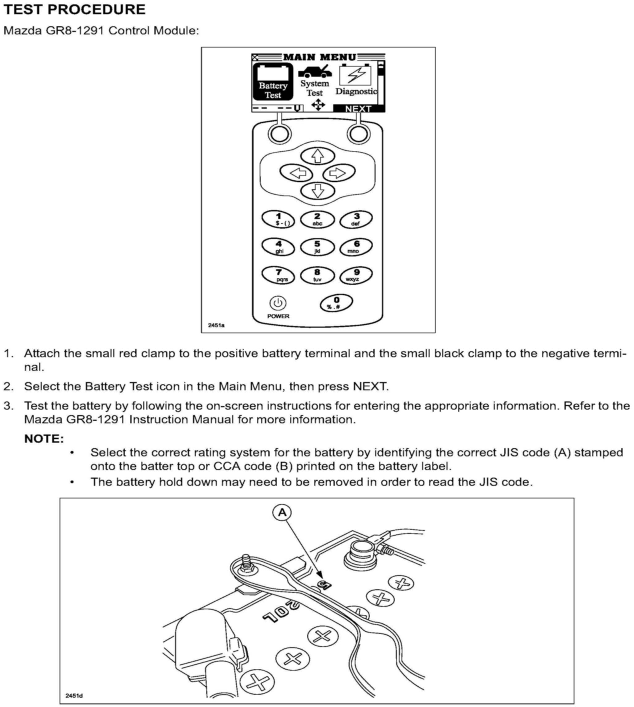
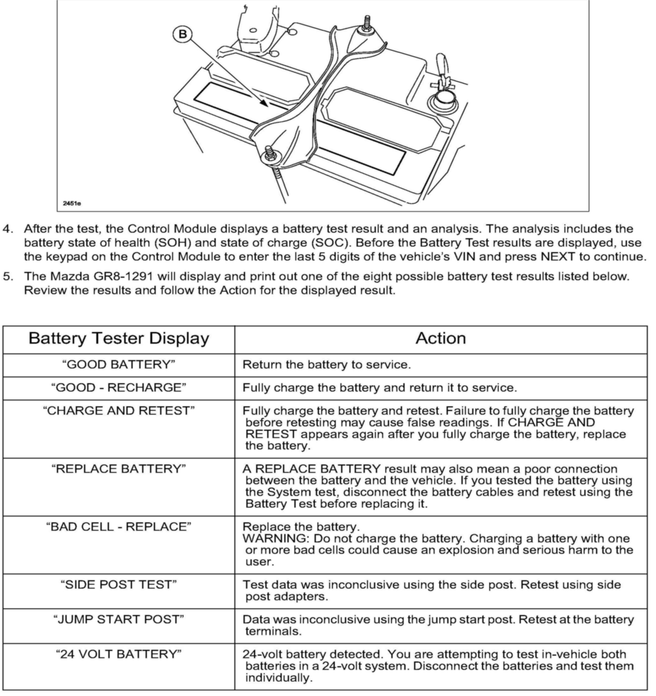
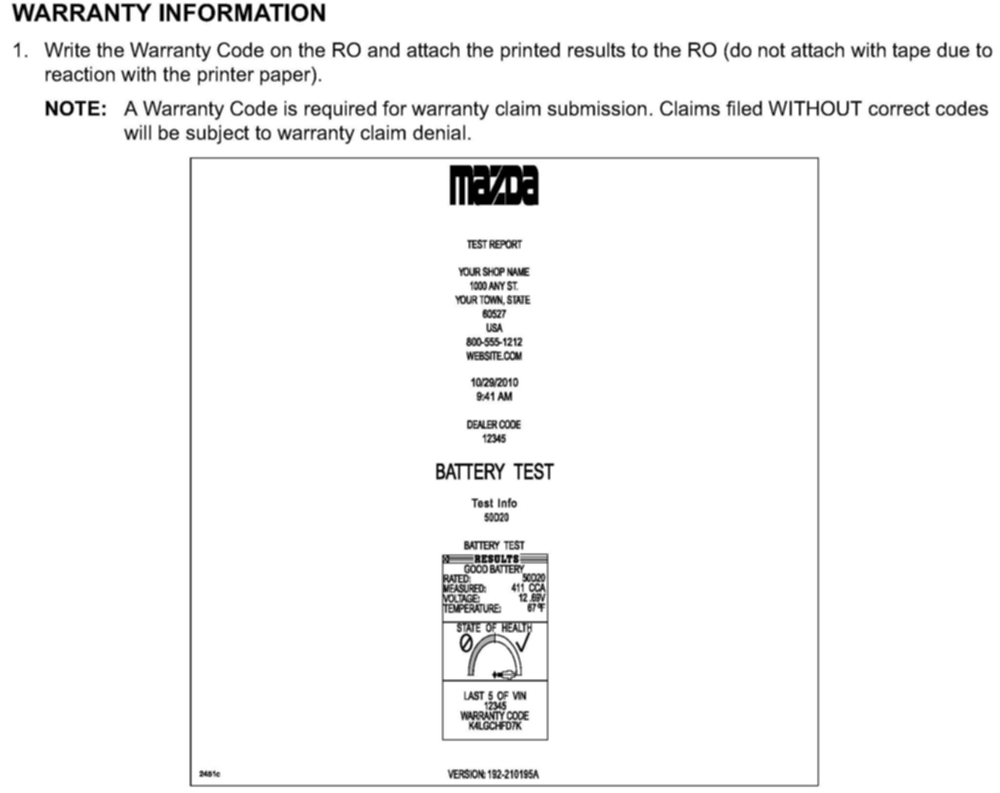
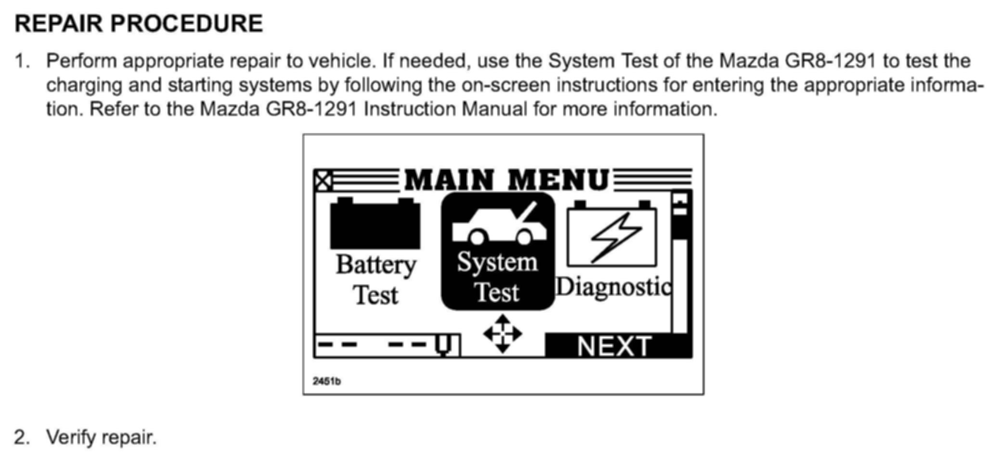

Electrical - Battery Testing Procedures
Bulletin No: 01-018/12Last Issued: 05/23/2012
Subject:
BATTERY TEST PROCEDURE REQUIREMENTS USING THE GR8-1291

BULLETIN NOTE

APPLICABLE MODEL(S)/VINS

DESCRIPTION


TEST PROCEDURE

WARRANTY INFORMATION

REPAIR PROCEDURE